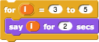
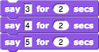
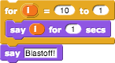
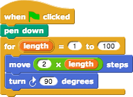
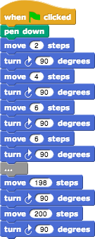
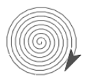

The repeat block is great if you want to repeat exactly the same behavior each time.
Sometimes, though, you want to do almost the same thing every time, but with a slight variation. Many such situations can be handled by the for block near the bottom of the Control palette:
What's new here is the orange oval with "i" in it. This is called a variable. It represents a different value in each repetition. Try this:

Note that we changed the numbers in the two white-oval input slots. We also dragged the variable i from the for block itself into the say block within its action slot. This "for loop" is equivalent to the following script:

Just saying the variable isn't all that interesting, although we can use that technique to simulate a rocket launch:

But now try this:

Note that we changed the name of the variable, by clicking on the orange oval without dragging it. This shape is called a "squiral" — a square spiral. Do you see why it spirals outward? The length of the move varies between repetitions. If we wanted to create this shape without using for, the script would look like this:

By the way, try changing the turning angle from 90 to 92. It makes a beautiful picture! Then play around with the numbers and see how close you can come to a smooth spiral:
